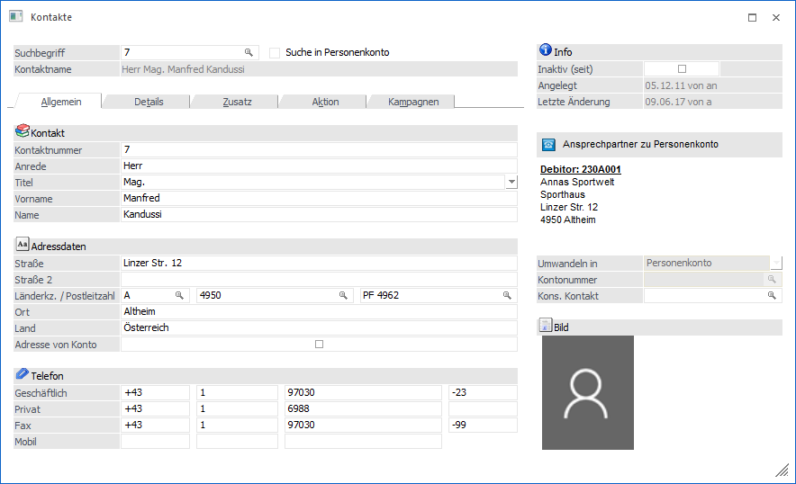
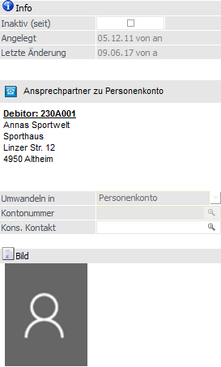
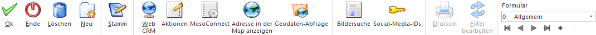

All jene Adressen, für welche WinLine keinen extra Stammdatenbereich vorsieht, aber in WinLine gespeichert werden sollen, können zentral über den Menüpunkt
1 CRM
1 Kontakte
verwaltet werden, wobei dieser Menüpunkt in allen Programmteilen der WinLine verfügbar ist. Grundsätzlich gibt es 4 Arten von "Kontakten":
ü Kontakte
Normale Kontakte sind
all jene Adressen, für welche WinLine keinen extra Stammdatenbereich vorsieht,
aber in WinLine gespeichert werden sollen
ü Ansprechpartner
Ansprechpartner
sind die Kontakte, welche mit einem Personenkonto oder einem Interessenten
gekoppelt sind, d.h. es besteht eine "1 zu 1"-Verbindung.
ü Firmenkontakte
Firmenkontakte
sind die Personenkonten bzw. die Interessenten als Kontakte.
ü Zahlungsempfänger
Arbeitnehmer
Dieser Art von Kontakt kann nur über den Arbeitnehmerstamm
(WinLine LOHN) aufgerufen werden und dient zur Hinterlegung von
Bankverbindungsdaten.

Das Fenster "Kontakte" ist in 5 Register unterteilt, welche in den folgenden Kapiteln beschrieben werden:
ü Register "Allgemein"
Im Register
"Allgemein" werden die Adressdaten erfasst.
ü Register "Details"
Im Register
"Details" werden zusätzliche Informationen, wie z.B. Bankverbindung etc.,
verwaltet.
ü Register "Zusatz"
Im Register
"Zusatz" können Zusatzfelder, Eigenschaften und Beziehungen hinterlegt
werden.
ü Register "Aktion"
Im Register
"Aktion" können gewisse Aktionen mit den Kontaktadressen durchgeführt
werden.
ü Register "Kampagnen"
Im Register
"Kampagnen" werden jene Kampagnen angezeigt, in denen der Kontakt enthalten
ist.
Zusätzlich stehen die folgenden Elemente in allen Registern zur Verfügung:
Auswahl
Ø Suchbegriff
Zum Aufrufen eines Kontakts kann an dieser Stelle ein Suchbegriff eingegeben und anschließend die Taste F9 gedrückt werden. Damit wird die Suche ausgelöst und im Matchcode-Fenster werden alle gefundenen Datensätze angezeigt. Durch Auswahl eines Datensatzes wird anschließend der Kontakt im Kontaktestamm geladen.
Hinweis
Neben der Suche über den Kontakte - Matchcode steht in dem Feld auch die Autovervollständigung zur Verfügung.
Ø Suche in Personenkonto
Wird diese Checkbox aktiviert, so werden nur mehr jene Ansprechpartner angezeigt, die als Personenkonto das im Feld "Suchbegriff" angegebene Konto hinterlegt haben.
Beispiel
Im Feld "Suchbegriff" wird die Kontonummer 230A001 hinterlegt und die Option "Suche in Personenkonto" aktiviert. Mittels VCR-Buttons kann nun durch die Ansprechpartner des Kontos 230A001 navigiert werden.
Ø Kontaktname
An dieser Stelle wird der Name (Anrede, Titel, Vorname und Nachname) des ausgewählten Kontakts angezeigt.
Information

Ø Inaktiv (seit)
Durch Aktivierung der Checkbox wird der aktuelle Datensatz auf inaktiv gesetzt. Dadurch wird dieser (standardmäßig) im Kontakte - Matchcode, sowie im "Namen suchen", nicht mehr angezeigt.
Ø Angelegt / Letzte Änderung
In diesen Feldern wird das Datum und das Login des Benutzers der Kontaktanlage, sowie der letzten Änderung, protokolliert.
Ø Zuordnungs-Info
An dieser Stelle wird dargestellt, um was für eine Art von Kontakt es sich handelt.
Ø Umwandeln in
Handelt es sich bei dem Datensatz um einen normalen Kontakt, dann kann an dieser Stelle definiert werden, ob eine Umwandlung stattfinden soll (die Eingabe einer "Kontonummer" ist hierfür notwendig). Folgende Möglichkeiten stehen zur Verfügung:
ü Personenkonto
ü Ansprechpartner
Ø Kontonummer
In diesem Feld kann jene Kontonummer angegeben werden, die
ü das neue Personenkonto erhalten soll, sobald aus dem Kontakt ein neues Personenkonto entsteht.
ü jenes Personenkonto hat, zu dem der Kontakt als neuer Ansprechpartner hinzugefügt werden soll.
Hinweis
Zur Suche nach bereits bestehenden Personenkonten steht der Matchcode zur Verfügung. Zusätzlich besteht die Möglichkeit eine bestehende Kontonummer anzugeben und durch Drücken der "+"-Taste sich die nächste freie Kontonummer vorschlagen zu lassen.
Ø Kons. Kontakt
Dieses Feld dient zum Zuweisen eines Kontaktes zwischen Haupt und Submandanten und wird über die Zuweisung verändert. Damit wird der Kontakt bei einer Änderung im Hauptmandanten im Submandanten automatisch abgeglichen / aktualisiert (wenn die Daten mit einer einsprechenden Vorlage verändert werden).
Wenn eine Änderung im Submandanten durchgeführt wird, so wird der Hauptmandant auch aktualisiert, wenn die Kontonummer dort nicht im Feld "Konsolidierungskontakt" eingetragen ist und der Konsolidierungskontakt leer ist. Außerdem wird im selben Mandanten nach dem gleichen Konsolidierungskontakt gesucht und die Stammdaten werden entsprechend aktualisiert.
Ø Bild
An dieser Stelle wird das Bild des Kontakts dargestellt. Ein neues Bild kann durch Anwahl des aktuellen Bilds oder mit Hilfe des Buttons "Bildersuche" zugewiesen werden.
Buttons

Ø Ok
Durch Anwahl des Buttons "Ok" bzw. der Taste F5 wird der Kontakt gespeichert.
Ø Ende
Durch Anwahl des Buttons "Ende" bzw. der Taste ESC wird das Fenster geschlossen und alle nicht gespeicherten Eingaben verworfen.
Ø Löschen
Mit Hilfe des Buttons "Löschen" kann der Kontakt gelöscht werden. Hierbei werden im Vorfeld folgende Prüfungen ausgeführt:
ü 1. Kontakt in mehreren
Wirtschaftsjahren vorhanden
Zunächst wird geprüft, ob der gleiche Kontakt in
weiteren Wirtschaftsjahren vorhanden ist. Hierbei werden die Datenfeld
"Kontaktnummer", "Anrede", "Titel", "Vorname" und "Name" für einen Abgleich
genutzt. Ist der Kontakt in mehreren Wirtschaftsjahren vorhanden, so kann die
Löschung im Anschluss in allen Wirtschaftsjahren oder nur im aktuellen
Wirtschaftsjahr erfolgen.
ü 2. Kontakt in Bewegungsdaten
vorhanden
Als nächstes wird geprüft, ob der Kontakt in Belegen oder
CRM-Fällen vorhanden ist und gefragt, ob eine Löschung (bei Vorhandensein)
definitiv durchgeführt werden soll.
Hinweis
Ist der Kontakt in mehreren Wirtschaftsjahren vorhanden, die Löschung wird aber nur im aktuellen Jahre durchgeführt, so wird der Kontakt aus Belegen, CRM-Fällen, Merklisten / Kampagnen, Archiveinträgen (Beschlagwortung) und Lagerorten nicht entfernt. Dieses ist auch der Fall, wenn eine Löschung in einem oder mehreren Wirtschaftsjahren nicht möglich ist (z.B. da der Name nicht gleichlautend ist).
Achtung
Handelt es sich um einen italienischen Mandanten (lt. Länderstamm in den FIBU-Parametern), so kann der erste Ansprechpartner zu einem Konto nicht gelöscht werden, da dieser für die Auswertung "Ritenuta D'Acconto" verwendet wird. Zusätzlich ist es nicht möglich den sogenannten Standard-Ansprechpartner oder Firmenkontakte zu löschen.
Ø Neu
Durch Drücken dieses Buttons kann ein neuer Kontakt angelegt werden.
Ø Stamm
Handelt es sich bei dem Kontakt um einen Ansprechpartner eines Personenkontos bzw. um den Firmenkontakt, so kann durch Anklicken des Buttons "Stamm" in den Personenkontenstamm gewechselt werden.
Ø Web CRM
Durch Anklicken dieses Buttons kann die WEB-Ansicht des Kontaktes geöffnet werden. Voraussetzung hierfür ist, dass sich die WinLine WEBEdition im Einsatz befindet.
Ø Aktionen
Durch Anklicken des Buttons "Aktionen" wird ein Kontextmenü geöffnet, in dem verschiedene Aktionen zur Verfügung stehen, die für den Kontakt ausgeführt werden können.
Hinweis
Im Programm "Aktionen" (WinLine START - Parameter - Aktionen) können zu den jeweiligen Aktionen auch CRM-Aktionen bzw. CRM-Startpunkte definiert werden.
Die standardmäßig zur Verfügung stehenden Aktionen haben folgende Funktionen:
ü  eMail senden
eMail senden
Der Kontakt wird als
temporäre Kampagne an das Postausgangsbuch (Versandart "Einzel-Mail") zum
Erstellen und Versenden der E-Mail übergeben.
ü  Brief schreiben
Brief schreiben
Es wird das
Postausgangsbuch geöffnet, in dem für den Kontakt ein Serienbrief ausgegeben
werden kann.
ü Fax
Es wird das Postausgangsbuch
geöffnet, in dem für den Kontakt ein Serienfax ausgegeben werden kann.
ü  Telefon 1 anrufen
Telefon 1 anrufen
Wird diese Aktion
gewählt und ist bei dem Kontakt auch eine Telefonnummer eingetragen, wird -
sofern die entsprechenden Voraussetzungen vorhanden sind - die Telefonnummer 1
gewählt.
ü  Telefon 2 anrufen
Telefon 2 anrufen
Wird diese Aktion
gewählt und ist bei dem Kontakt auch eine Telefonnummer eingetragen, wird -
sofern die entsprechenden Voraussetzungen vorhanden sind - die Telefonnummer 2
gewählt.
ü  Mobiltelefon anrufen
Mobiltelefon anrufen
Wird diese Aktion
gewählt und ist bei dem Kontakt auch eine Telefonnummer eingetragen, wird -
sofern die entsprechenden Voraussetzungen vorhanden sind - die
Mobiltelefonnummer gewählt.
ü WWW Adresse aufrufen
Wenn bei dem
Kontakt eine Internet-Adresse hinterlegt ist, wird der installierte Browser
geöffnet und automatisch die im Datensatz hinterlegte Adresse angesurft.
ü  Info aufrufen
Info aufrufen
Wenn es sich bei dem
Kontakt um einen Ansprechpartner oder einen Firmenkontakt eines Personenkontos
handelt, dann wird das Konto in der Konteninformation (WinLine INFO)
geöffnet.
Ø Meso-Connect
Durch Anklicken des Buttons "Meso-Connect" wird ein Kontextmenü geöffnet, in dem standardmäßig folgende "Meso-Connect"-Aktionen zur Verfügung stehen:
ü Mail
An den Kontakt kann mit dieser
Aktion eine Mail geschickt werden. Es öffnet sich dazu das Meso-Connect-Mail
Fenster indem die Betreffzeile des Mails sowie ein Text angegeben werden kann.
Weiter besteht noch die Möglichkeit, ein Attachement anzuhängen. Voraussetzung
ist, dass bei dem Kontakt auch eine E-Mail-Adresse vorhanden ist.
ü  Kontakte
Kontakte
Mit dieser Aktion kann ein
Abgleich mit den Microsoft Outlook-Kontakten durchgeführt werden, wobei es 4
unterschiedliche Szenarien geben kann:
ü 1. Der Datensatz ist in Outlook noch nicht vorhanden. In diesem Fall wird der Kontakt neu angelegt.
ü 2. Der Datensatz ist in Outlook bereits vorhanden, in der WinLine wurde eine Änderung durchgeführt. In diesem Fall werden die veränderten Daten an Outlook übergeben.
ü 3. Der Datensatz ist in Outlook bereits vorhanden und wurde dort auch verändert. In diesem Fall werden die veränderten Daten in die WinLine übernommen.
ü 4. Der Datensatz ist in Outlook und in der WinLine bereits vorhanden und wurde auch in beiden bereits verändert. In diesem Fall erfolgt eine Frage, welche der Daten aktualisiert werden sollen.
ü  Excel
Excel
Damit wird das Programm Microsoft
Excel gestartet und die Adressdaten des Kontakts übergeben.
ü Word-Tabelle
Bei dieser Aktion wird
Microsoft Word gestartete und die Adressdaten des Kontakts übergeben.
ü StarCalc
Sofern das Programm StarCalc
installiert ist, können die Daten in dieses Programm übergeben werden.
ü  StarWrite
StarWrite
Sofern das Programm StarWrite
installiert ist, können die Daten in dieses Programm übergeben werden.
ü  Wizard
Wizard
Über diesen Eintrag kann der
MESO-Connect Wizard aufgerufen werden, mit dem neue Aktionen erstellt bzw.
bestehende Aktionen verändert werden können.
Ø Adresse in der Map anzeigen
Wenn dieser Button angeklickt wird, wird - sofern eine Internetverbindung vorhanden ist - eine Internetseite geöffnet, in welcher der Standort der gewählten Adresse angezeigt wird.

Hinweis
Wenn im Bereich "Mein Standort" die eigene Adresse eingegeben wird, dann kann auch die Route zum Ziel ermittelt und angezeigt werden. Die Speicherung des eigenen Standorts per Cookie ist ebenfalls möglich.
Ø Geodaten-Abfrage
Mit Hilfe von Geodaten kann der Kontakt in der Geo Map des Power Reports dargestellt werden. Durch Anwahl des Buttons "Geodaten-Abfrage" werden hierfür die genauen Geodaten des Kontakts über das Internet ermittelt und abgespeichert. Die Ermittlung findet anhand der folgenden Parameter statt:
ü Straße
ü Postleitzahl
ü Ort
ü Land
Hinweis
Bei der Anlage eines Kontakts werden automatisch ungenaue Geodaten (durch eine in der WinLine vorhandene Koordinatentabelle) ermittelt und zugewiesen. Die Ermittlung findet anhand der folgenden Parameter statt:
ü Postleitzahl
ü Länderkennzeichen
Ø Bildersuche
Mit Hilfe dieses Buttons kann ein Bild für den Kontakt gesucht, ausgeschnitten und zugeordnet werden. Hierbei wird zunächst über ein Menü die Quelle des Bilds definiert. Folgende Varianten stehen zur Verfügung:
ü Bildersuche
Es wird das
Programm "Bildersuche" geöffnet.
ü Bildersuche - WinLine
Es wird
das Programm "Bilder in Datenbanken" geöffnet, über welches eine Grafik
ausgewählt werden kann.
ü Bildersuche - Datenträger
Es
wird der Öffnen-Dialog von Windows geöffnet, über welchen eine Grafik ausgewählt
werden kann.
Ø Social-Media-IDs
Durch Anwahl dieses Buttons wird das Fenster "Social Media-IDs" geöffnet. In diesem können die Social-Media-IDs des Kontakts hinterlegt werden.
Ø Drucken (nur im Register "Aktion" anwählbar)
Wenn dieser Button angeklickt wird, dann wird das ausgewählte Formular ausgedruckt.
Ø Filter bearbeiten (nur im Register "Aktion" anwählbar)
Dieser Button kann nur dann angeklickt werden, wenn im Register "Aktion" die Druckart "Listendruck" ausgewählt wurde. Damit kann ein Filter für die Ausgabe hinterlegt werden.
Ø Formular
Über die Auswahlliste "Formular" kann gewählt werden, in welcher Form der Stammdatensatz bearbeitet werden soll. Wenn die Option "0 - Allgemein" gewählt wird, dann bleibt das Fenster so, wie es ist. Zusätzlich können eigene Formulare über den Programmbereich "Vorlagen Anlage" (WinLine Start - Vorlagen - Vorlagen Anlage) kreiert werden.
Hinweis
Bei den Kontaktstämmen im WinLine LOHN Österreich und WinLine LOHN Deutschland können keine Formulare ausgewählt werden, weil diese Kontakte fix verknüpft sind und eigene Funktionalitäten aufweisen.
Ø VCR-Buttons
Über die so genannten VCR-Buttons, welche in jedem Register zur Verfügung stehen, kann durch Mausklick zwischen den Datensätzen geblättert werden.
ü  Damit kann der erste Datensatz angesprochen werden.
Damit kann der erste Datensatz angesprochen werden.
ü  Damit kann der vorherige Datensatz angesprochen werden.
Damit kann der vorherige Datensatz angesprochen werden.
ü  Damit kann der nächste Datensatz angesprochen.
Damit kann der nächste Datensatz angesprochen.
ü  Damit kann der letzte Datensatz angesprochen werden.
Damit kann der letzte Datensatz angesprochen werden.
ü  Damit wird die nächste freie Nummer für die Neuanlage gesucht.
Damit wird die nächste freie Nummer für die Neuanlage gesucht.